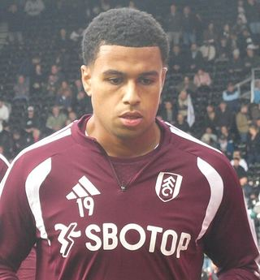

Ezzcoins › Player pages › Shea Charles (FUT Champions)
80
CM

Charles
PAC74
SHO71
PAS80
DRI78
DEF77
PHY83
FUT Champions
PlayStyles
Dead BallJockeyInterceptPress ProvenFUT Champions
Shea Charles
80 CM · Fulham · Premier League · Northern Ireland
Reward card · not tradeable
84Meta rating · CDM +4 vs overall
CDM84CM82
PAC74
SHO71
PAS80
DRI78
DEF77
PHY83
Chemistry style
Turn on JavaScript to see this card with each chemistry style.
- Card
- FUT Champions
- Added
- 2 Oct 2026
- Position
- CM (also CDM)
- Club
- Fulham
- League
- Premier League
- Nation
- Northern Ireland
- Skill moves
- 3★
- Weak foot
- 3★
- PlayStyles+
- None
- PlayStyles
- Dead Ball, Jockey, Intercept, Press Proven
- Base card
- 73 CDM
Meta rating: Ezzcoins' own estimate of how well this card plays in game, worked out from its stats for each position it can play, its skill moves, weak foot and PlayStyle+. An average card scores about its overall rating; higher means it plays above its rating.
Watch on Ezzcoins